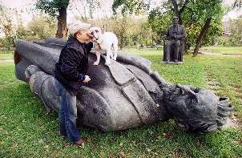

ДЕНЬ НЕСБЫВШИХСЯ НАДЕЖД
Сегодня двойная годовщин надежд, которые поманили, да не сбылись.
3 декабря 1989 года Буш и Горбачев официально объявили, что США и СССР больше не враждуют. «Холодная война», от которой человечество холодело сорок лет, готовясь к ядерной катастрофе, закончилась. Тогда казалось — навсегда. Теперь, наконец, цивилизация перестанет тратить львиную долю своих доходов на производство ракет и бомб, а инвестируется в развитие, в гуманитарные проекты, победит бедность, научится лечить любые болезни — все будут жить долго и счастливо.
Ноу. Ледниковый период вернулся.
А 3 декабря 1991 года распустили чудовищную организацию КГБ СССР, преемницу сталинского МГБ, ежовского НКВД и ленинского ЧК (никак не можем до сих пор сосчитать миллионы жертв этого Молоха). Как же мы радовались: всё — теперь Россия сможет жить свободно и без страха.
Net. Иногда они возвращаются. Собственно, всегда возвращаются.
«Холуй трясётся. Раб хохочет. Палач свою секиру точит».
Извините за непозитив, но нет ничего паршивей, чем возвращаться в плохие места, из которых, казалось, навсегда ушел.
Закончу строчкой из того же стихотворения: «Пускай художник, паразит, другой пейзаж изобразит».
Считайте это тостом. Сегодня грех не выпить чего-нибудь крепкого.